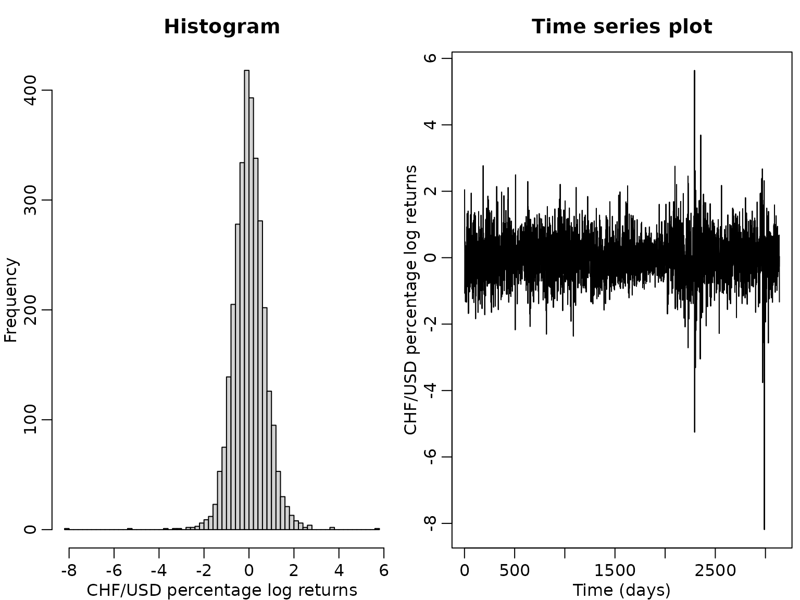
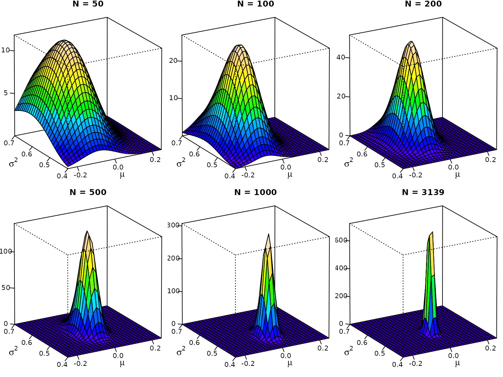
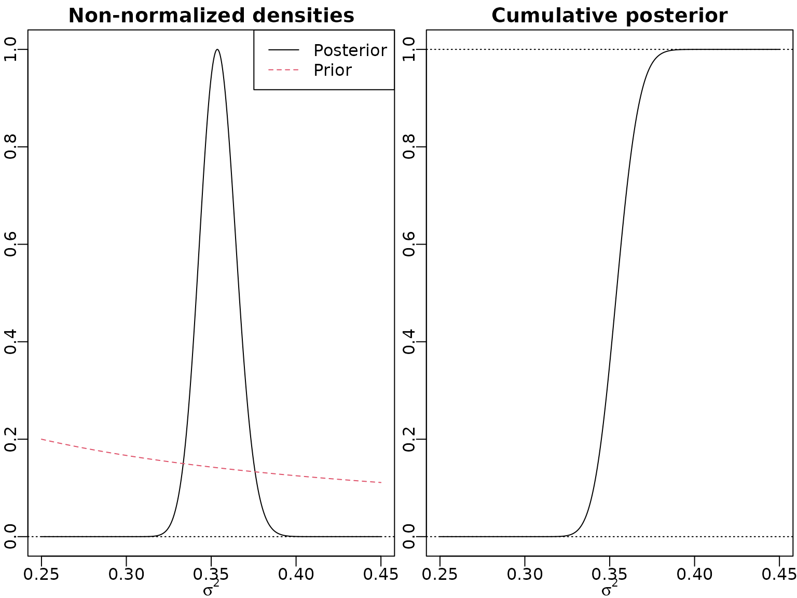
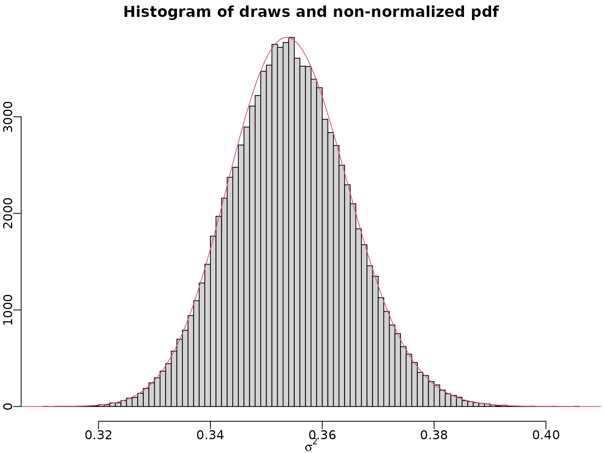
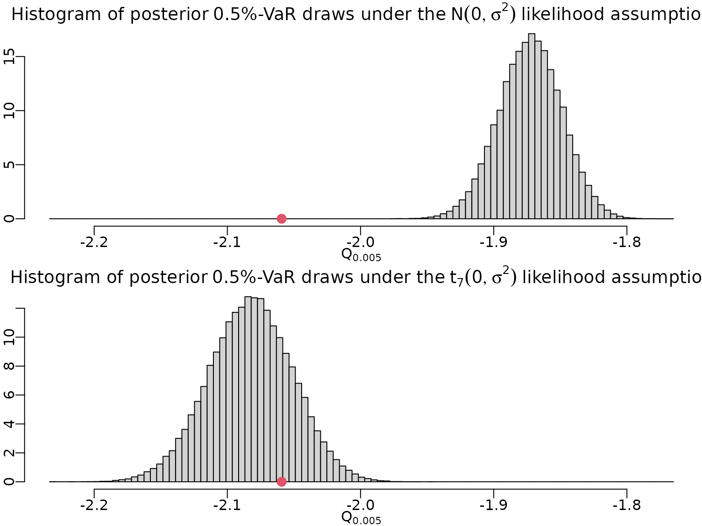

Chapter 4: A First Bayesian Analysis of Continuous Data
Chapter04.RmdSwiss franc versus US dollar
Example 4.1: The data
We use daily exchange rate data contained in the package stochvol, covering the period from January 3, 2000, until April 4, 2012. We are interested in the percentage log returns of the the Swiss franc (CHF) against the US dollar (USD).
data("exrates", package = "stochvol")
y <- 100 * diff(log(exrates$USD / exrates$CHF))
N <- length(y)
hist(y, breaks = 50, main = "Histogram",
xlab = "CHF/USD percentage log returns")
ts.plot(y, main = "Time series plot", ylab = "CHF/USD percentage log returns",
xlab = "Time (days)")
Example 4.2: A first posterior
For a first joint inference on and , we assume a Gaussian likelihood,
In addition, we assume the improper prior yielding the posterior Before being able to visualize the posterior, we need to do a little bit of preparation work. As base R does not ship the density function of the inverse gamma distribution, we define it ourselves using the transformation law of densities. We also add the cumulative distribution function and the quantile function, which we will need later. Note that drawing inverse gamma variates amounts to drawing gamma variates and taking their reciprocal.
dinvgamma <- function(x, a, b, log = FALSE) {
logdens <- dgamma(1/x, a, b, log = TRUE) - 2 * log(x)
if (log) logdens else exp(logdens)
}
pinvgamma <- function(q, a, b) {
1 - pgamma(1 / q, a, b)
}
qinvgamma <- function(p, a, b) {
1 / qgamma(1 - p, a, b)
}
rinvgamma <- function(ndraws, a, b) {
1 / rgamma(ndraws, a, b)
}We can now define the posterior density function. Note that in R, the Gaussian distribution is parameterized in terms of mean and standard deviation (not mean and variance).
posterior <- function(mu, sigma2, ybar, s2, N) {
dnorm(mu, ybar, sqrt(sigma2 / N)) *
dinvgamma(sigma2, (N - 1) / 2, N * s2 / 2)
}Now we can visualize.
mu <- seq(-.25, .25, length.out = 30)
sigma2 <- seq(.4, .7, length.out = 30)
# Generate the desired number of colors from a palette
nbcol <- 20
color <- topo.colors(nbcol)
# Plot for different sample sizes
for (n in c(50, 100, 200, 500, 1000, N)) {
ytmp <- head(y, n)
z <- outer(mu, sigma2, posterior, ybar = mean(ytmp),
s2 = var(ytmp) * (n - 1) / n, N = n)
# Compute the density values at the facet centers
zfacet <- z[-1, -1] + z[-1, -ncol(z)] + z[-nrow(z), -1] +
z[-nrow(z), -ncol(z)]
# Recode facet density values into color indices
facetcol <- cut(zfacet, nbcol)
# Perspective plot
pmat <- persp(mu, sigma2, z, col = color[facetcol], ticktype = "detailed",
main = paste0("N = ", n), nticks = 4, zlab = "", xlab = "",
ylab = "", phi = 20, theta = -30, r = 100)
# Add axis labels (done manually because persp does not support expressions)
loc <- trans3d(mean(mu) - .15 * diff(range(mu)),
min(sigma2) - .4 * diff(range(sigma2)),
0, pmat = pmat)
text(loc$x, loc$y, expression(mu), cex = 1.3)
loc <- trans3d(min(mu) - .35 * diff(range(mu)),
mean(sigma2) - .1 * diff(range(sigma2)),
0, pmat = pmat)
text(loc$x, loc$y, expression(sigma^2), cex = 1.3)
}
Example 4.3: Posterior marginals
We now want to visualize the univariate marginals of the bivariate posterior. Again, we need to do some preparations, as R does not natively cater for the generalized Student- distribution. So we first define its (cumulative) density and quantile functions via the original Student- distribution.
dstudt <- function(x, location = 0, scale = 1, df, log = FALSE) {
logdens <- dt((x - location) / scale, df = df, log = TRUE) - log(scale)
if (log) logdens else exp(logdens)
}
pstudt <- function(x, location = 0, scale = 1, df) {
pt((x - location) / scale, df = df)
}
qstudt <- function(p, location = 0, scale = 1, df) {
location + scale * qt(p, df = df)
}
rstudt <- function(n, location = 0, scale = 1, df) {
location + scale * rt(n, df = df)
}Now we visualize the marginals and some quantiles thereof.
location <- mean(y)
scale <- sqrt(var(y) / N)
df <- N - 1
probs <- c(0.025, .5, .975)
mu <- seq(-.06, .06, length.out = 300)
plot(mu, dstudt(mu, location, scale, df), type = "l", xlab = expression(mu),
ylab = "", main = "Posterior density and quantiles")
abline(h = 0, lty = 3)
qs <- qstudt(probs, location, scale, df)
ds <- dstudt(qs, location, scale, df)
for (i in seq_along(probs)) {
lines(c(qs[i], qs[i]), c(0, ds[i]), lty = 2)
}
mtext(round(qs, 3), side = 1, line = -1, at = qs, cex = .5)
plot(mu, pstudt(mu, location, scale, df), type = "l", xlab = expression(mu),
ylab = "", main = "Posterior cdf and quantiles")
abline(h = c(0, 1), lty = 3)
myxlim <- par("usr")[1] - .1 * diff(par("usr")[1:2])
for (i in seq_along(probs)) {
lines(c(myxlim, qs[i]), c(probs[i], probs[i]), lty = 2)
lines(c(qs[i], qs[i]), c(probs[i], 0), lty = 2)
}
mtext(round(qs, 3), side = 1, line = -1, at = qs, cex = .5)
mtext(probs, side = 2, at = probs, cex = .5, adj = c(0, .5, 1))
cN <- (N - 1) / 2
CN <- var(y) * (N - 1) / 2
sigma2 <- seq(0.45, .6, length.out = 300)
plot(sigma2, dinvgamma(sigma2, cN, CN), type = "l", xlab = expression(sigma^2),
ylab = "", main = "Posterior density and quantiles")
abline(h = 0, lty = 3)
qs <- qinvgamma(probs, cN, CN)
ds <- dinvgamma(qs, cN, CN)
for (i in seq_along(probs)) {
lines(c(qs[i], qs[i]), c(0, ds[i]), lty = 2)
}
mtext(round(qs, 3), side = 1, line = -1, at = qs, cex = .5)
plot(sigma2, pinvgamma(sigma2, cN, CN), type = "l", xlab = expression(sigma^2),
ylab = "", main = "Posterior cdf and quantiles")
abline(h = c(0, 1), lty = 3)
myxlim <- par("usr")[1] - .1 * diff(par("usr")[1:2])
for (i in seq_along(probs)) {
lines(c(myxlim, qs[i]), c(probs[i], probs[i]), lty = 2)
lines(c(qs[i], qs[i]), c(probs[i], 0), lty = 2)
}
mtext(round(qs, 3), side = 1, line = -1, at = qs, cex = .5)
mtext(probs, side = 2, at = probs, cex = .5, adj = c(0, .5, 1))Posterior expectation and the equal-tailed 95% Bayesian CI of are easily computed.
round(CN / (cN - 1), 3)
#> [1] 0.528
round(qinvgamma(c(.025, .975), cN, CN), 4)
#> [1] 0.5029 0.5553To find the HPD we can use a grid search.
Example 4.4: Fitting a Student- distribution with known mean and known degrees of freedom
We first define post_nonnormalized_nonvec, a function
evaluating the non-normalized posterior density of
.
This function is not vectorized in its first argument,
.
Rather, it expects a scalar sigma2 and a data vector
y. We can, however, vectorize it using
Vectorize (this is not the fasted of all methods in R, but
will do just fine for our use-case).
post_nonnormalized_nonvec <- function(sigma2, y, nu, log = FALSE) {
logdens <- -length(y) / 2 * log(sigma2) -
(nu + 1) / 2 * sum(log(1 + y^2 / (nu * sigma2))) - log(sigma2)
if (log) logdens else exp(logdens)
}
post_nonnormalized <- Vectorize(post_nonnormalized_nonvec, "sigma2")Now we can plot. Note that we (arbitrarily) standardize the non-normalized posterior to have a maximum of one. In addition, we visualize a non-normalized version of the prior. Concerning the cumulative distribution function, we simply divide by the highest (last) value to achieve normalization.
nu <- 7
sigma2 <- seq(0.25, 0.45, length.out = 3000)
pdf_u <- post_nonnormalized(sigma2, y = y, nu = nu)
pdf_u <- pdf_u / max(pdf_u)
plot(sigma2, pdf_u, type = "l", xlab = expression(sigma^2),
ylab = "", main = "Non-normalized densities")
abline(h = 0, lty = 3)
lines(sigma2, 0.05 * 1/sigma2, lty = 2, col = 2)
legend("topright", c("Posterior", "Prior"), col = 1:2, lty = 1:2)
cdf_u <- cumsum(pdf_u) / sum(pdf_u)
plot(sigma2, cdf_u, type = "l", xlab = expression(sigma^2),
ylab = "", main = "Cumulative posterior")
abline(h = c(0, cdf_u[length(cdf_u)]), lty = 3)
To determine the normalizing constant , we can perform numerical integration via the trapezoid rule.
resolution <- 100
grid <- seq(0.25, 0.45, length.out = resolution + 1)
integrand <- post_nonnormalized(grid, y = y, nu = nu)
C <- sum(diff(grid) * .5 * (head(integrand, -1) + tail(integrand, -1)))Now we can numerically approximate the posterior expectation and standard deviation, again using the trapezoid rule.
Example 4.5: Bayesian learning of quantiles
To learn about the distribution of a certain low quantile, the Value-at-Risk (VaR), we can generate draws from it. For the Gaussian model with mean zero and , we simulate from and then, conditionally on these draws, compute the quantiles of interest from . Note, again, that R’s vectorization ability comes in handy. Here, in particular, rnorm can handle the so-called varying parameter case.
set.seed(2)
alpha <- 0.005
ndraws <- 100000
sigma2draws <- rinvgamma(ndraws, N / 2, sum(y^2) / 2)
qnormdraws <- qnorm(alpha, 0, sqrt(sigma2draws))For the Student- model, we can use inverse transform sampling. First, we draw uniformly from the interval spanned by 0 and the maximum of the non-normalized cumulative posterior. Then, for each draw, we find the interval of our pointwise cdf approximation of the posterior, and interpolate linearly between the interval boundaries.
unifdraws <- runif(ndraws, 0, cdf_u[length(cdf_u)])
leftind <- findInterval(unifdraws, cdf_u)
rightind <- leftind + 1L
distprop <- (unifdraws - cdf_u[leftind]) / (cdf_u[rightind] - cdf_u[leftind])
sigma2draws <- sigma2[leftind] + distprop *
(sigma2[rightind] - sigma2[leftind])Let us do a quick graphical check whether the draws and our pdf align.
myhist <- hist(sigma2draws, breaks = 100, xlab = expression(sigma^2),
ylab = "", main = "Histogram of draws and non-normalized pdf")
lines(sigma2, max(myhist$counts) / max(pdf_u) * pdf_u, col = 2)
Now, we can draw from the quantile distribution and plot these draws.
qtdraws <- sqrt(sigma2draws) * qt(alpha, df = nu)
minmax <- range(qnormdraws, qtdraws, quantile(y, alpha))
mybreaks <- seq(minmax[1] - .01 * diff(minmax),
minmax[2] + .01 * diff(minmax),
length.out = 100)
hist(qnormdraws, breaks = mybreaks, ylab = "", xlab = bquote(Q[.(alpha)]),
main = bquote("Histogram of posterior" ~ .(100 * alpha) *
"%-VaR draws under the" ~ N(0, sigma^2) ~
"likelihood assumption"), prob = TRUE)
points(quantile(y, alpha), 0, col = 2, pch = 16, cex = 1.5)
hist(qtdraws, breaks = mybreaks, ylab = "", xlab = bquote(Q[.(alpha)]),
main = bquote("Histogram of posterior" ~ .(100 * alpha) *
"%-VaR draws under the" ~ t[.(nu)](0, sigma^2) ~
"likelihood assumption"), prob = TRUE)
points(quantile(y, alpha), 0, col = 2, pch = 16, cex = 1.5)
To conclude, let us compute point and interval estimates for our VaR.